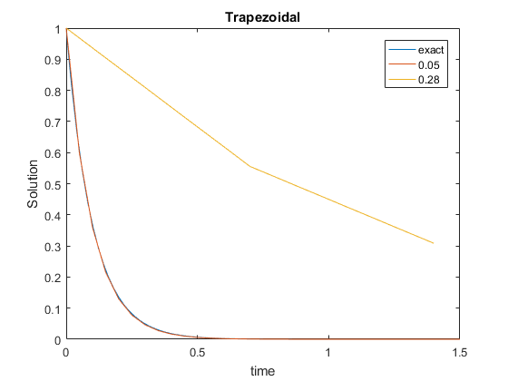

Contents
Part 1
clear all; close all; clc; clf;
LM = -10;
range = 0:.01:.3;
z = LM*range;
EF = @(z) 1+z;
EB = @(z) (1-z).^(-1);
T_M = @(z) (1+z/2)./(1-z/2);
S_RK2 = @(z) 1 + z + .5*z.^2;
S_RK4 = @(z) 1 + z + .5*z.^2 + (1/6)*z.^3 + (1/24)*z.^4;
S_AB2_P = @(z) (2+3*z+sqrt(9*z.^2 + 4*z + 4))/4;
S_AB2_M = @(z) (2+3*z-sqrt(9*z.^2 + 4*z + 4))/4;
Stability_function = {abs(EF(z)),abs(EB(z)),abs(T_M(z)),abs(S_RK2(z)),abs(S_RK4(z)),abs(S_AB2_P(z)),abs(S_AB2_M(z))};
Stability_info={'EF','EB','T and M','RK2','RK4','AB2 Root 1','AB2 Root 2'};
figure(1)
Plotting_Stability(Stability_function,Stability_info,range);
hold off
Part 2
LM = -10;
func = @(t,y) LM*y;
y0 = 1;
H_1 = [.05,.2,.18,.19];
H_2 = [.05,.28,.26,.279];
H_3 = [.05,.16,.07,.12];
H_4 = [.05,.7,.2,.5];
H = {H_1,H_2,H_3,H_4};
T = 1.5;
[X_exact,Y_exact] = ode45(func,0:T,y0);
Methods = {@Explicit_Euler,@RK2,@RK4,@AB2,@Implicit_Euler,@Midpoint,@Trapezoidal};
m = 1;
for i=1:length(Methods)
if i<=2
h = H{1};
elseif i==3
h = H{2};
elseif i==4
h = H{3};
else
h = H{4};
end
for k=1:length(h)
[X_temp,Y_temp,~] = feval(Methods{i},func,h(k),T,y0);
Y{m}{i} = Y_temp;
X{m}{i} = X_temp;
m = m+1;
end
m = 1;
end
Title = {'Forward Euler','RK2','RK4','AB2','Backward Euler','Midpoint','Trapezoidal'};
for i=1:length(H)
leg{i,1} = {'exact',num2str(H{i}(1)),num2str(H{i}(2))};
leg{i,2} = {'exact',num2str(H{i}(3))};
leg{i,3} = {'exact',num2str(H{i}(4))};
end
Plotting_Functions(Methods,X,Y,X_exact,Y_exact,Title,leg)
Warning: Ignoring extra legend entries.
Warning: Ignoring extra legend entries.
Warning: Ignoring extra legend entries.
Warning: Ignoring extra legend entries.
Warning: Ignoring extra legend entries.
Warning: Ignoring extra legend entries.
Warning: Ignoring extra legend entries.

